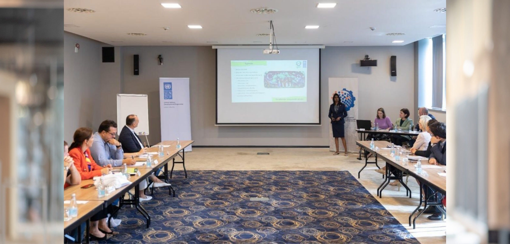

UNDP Bosnia and Herzegovina launched the Climate Action Academy for elected representatives and decision-makers — and invited Dr. Golda Edwin, Associate Professor at MVIT Puducherry and Executive Director of APSCC, to deliver the keynote for its first module on Biodiversity and Protected Areas, held in Sarajevo.
The Climate Action Academy is designed to strengthen the knowledge and decision-making capacity of elected officials and policymakers on climate and environmental priorities. Its opening module placed biodiversity and protected areas at the centre of the conversation, recognising that safeguarding nature is inseparable from effective climate action.
UNDP recognised Dr. Edwin’s international experience in nature, biodiversity protection and ecosystem restoration. In her keynote she shared international examples of good practice in biodiversity conservation and ecosystem restoration, connecting lessons from South Asia with the European policy context and the priorities of Bosnia and Herzegovina.

Opening the Academy
The module was opened by Raduška Cupać, Head of the Energy and Environment Sector at UNDP, and Saša Magazinović, Member of the House of Representatives in the Parliamentary Assembly of Bosnia and Herzegovina and Chair of the Green Club — underscoring the shared commitment of UNDP and parliamentary leaders to embedding biodiversity in national decision-making.
From the classroom to the field
Participants complemented the module with a field visit to the Protected Landscape “Bijambare”, translating policy discussion into a first-hand encounter with the natural heritage the Academy seeks to protect. Bosnia and Herzegovina holds exceptional biological and landscape diversity, yet protected areas still cover only a small percentage of its territory — a gap the Academy aims to help close.
Connecting expertise from different regions — from South Asia to South-East Europe — helps decision-makers see that protecting biodiversity and restoring ecosystems is a shared, borderless responsibility.
Part of a wider programme
The Academy is implemented under UNDP’s CBIT project, financed by the Global Environment Facility (GEF). Subsequent modules are planned on energy efficiency, renewable energy, energy transition and environmental protection — building a comprehensive knowledge base for climate-informed governance in Bosnia and Herzegovina.
Aligned with the SDGs
The engagement advances the following Sustainable Development Goals — reinforcing climate action, the protection of life on land, strong institutions and global partnerships:


Event: UNDP Climate Action Academy — Module 1: Biodiversity and Protected Areas, Sarajevo, Bosnia & Herzegovina · 31 August 2026. Implemented under UNDP’s CBIT project, financed by GEF.